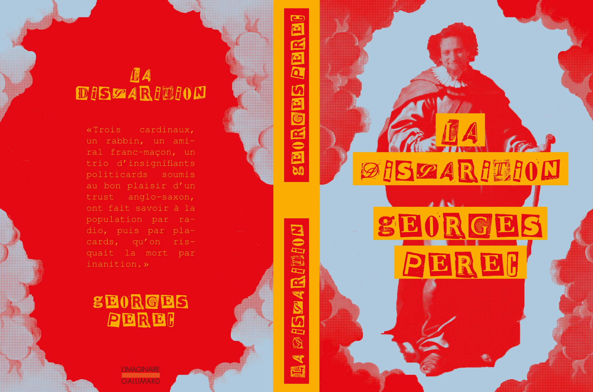
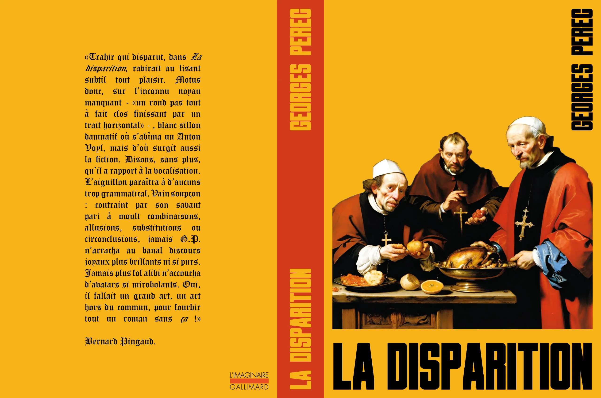

Intllignc Artficill
2024
Ce projet est une piste d’expérimentation sur les possibilités de mariage entre des images créées artificiellement et des images créées par l’humain. A partir de l’avant-propos de "La disparition" de Georges Perec, j’ai généré plusieurs images en fonction de mes partis pris, et les ai modifiées ou alors laissées telles quelles. Le projet final se présente sous la forme de jaquettes, celles du livre original.


×